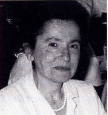
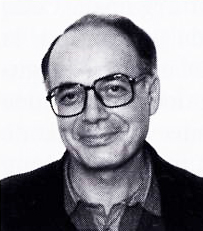

|
Qui sommes-nous? |
|
 Médecin-neurologue, chercheur à l’Institut de la Santé et de la Recherche Médicale (INSERM), Lilia Curzi-Dascalova a consacré l’essentiel de ses recherches au développement du sommeil chez les jeunes enfants. Elle a signé plus d’une centaine d’articles publiés dans des revues internationales, telles les : Journal of Sleep Research, Pediatric Research, Journal of Pediatrics, Revue d’Electroencéphalographie et de Neurophysiologie Cliniques etc., ainsi que d’ouvrages spécialisés. Ces dernières années, elle a consacré une partie notable de ses recherches à la représentation du sommeil dans les Arts plastiques, basées sur une banque de données personnelle d’images de plus de six mille deux cent entrées. Ces conférences présentées en Europe, aux Etats-Unis, en Amérique latine et au Japon alternent des sujets de recherches portant sur l’enfant, croisés à ceux consacrés aux Arts. |
|
 Originaire de Nice (Alpes Maritimes), Lucien Curzi a effectué la majeure partie de sa carrière professionnelle dans la presse écrite. Critique d’Art à Paris, il a publié surtout des monographies afférentes, notamment, aux œuvres d’André Masson, Picasso, Wifredo Lam, Luc Peire, Olivier Debré, de nombreux articles et essais critiques, ainsi que des poèmes illustrés par des artistes contemporains. Depuis toujours, il porte un vif intérêt aux disciplines de l’estampe et aux ateliers de gravure, aux maîtres-graveurs et, dans le domaine de la terre et du feu, à la création céramique, en particulier dans les domaines du grès et de la porcelaine. Il a d’ailleurs écrit plusieurs études portant sur ces disciplines. Il a conçu et organisé, en outre, des expositions d’art en nombre (peinture et sculpture) et a préfacé une centaine de manifestations temporaires d’artistes vivants. |
|
Contact: lilia.curzi@wanadoo.fr |
|
Banque de données jointe : répertoire sous Excel 2010 de 15 colonnes, avec 6212 entrées d’œuvres d’art dédiées au sommeil. Répertoire essentiellement en français, avec liste bilingue des mots-clés. Y figurent des données sur les artistes (pays, époque), les œuvres d’art (titre, date, thématique, techniques) et leur localisation (endroit, ville, état), ainsi que les populations concernées (hommes adulte, nourrisson, enfant, animaux, œuvres abstraites). |